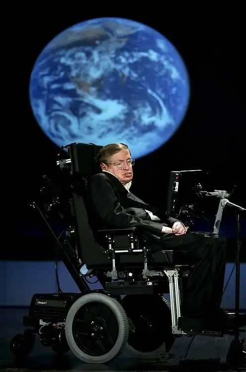

科学苍穹上一颗最闪耀的明星--Stephen Hawking
斯蒂芬·威廉·霍金（Stephen William Hawking，1942年1月8日—2018年3月14日），男，出生于英国牛津，英国剑桥大学著名物理学家，现代最伟大的物理学家之一、20世纪享有国际盛誉的伟人之一。 1963年，霍金21岁时患上肌肉萎缩性侧索硬化症（卢伽雷氏症），全身瘫痪，不能言语，手部只有三根手指可以活动。1979至2009年任卢卡斯数学教授，主要研究领域是宇宙论和黑洞，证明了广义相对论的奇性定理和黑洞面积定理，提出了黑洞蒸发理论和无边界的霍金宇宙模型，在统一20世纪物理学的两大基础理论——爱因斯坦创立的相对论和普朗克创立的量子力学方面走出了重要一步。获得CH（英国荣誉勋爵）、CBE（大英帝国司令勋章）、FRS（英国皇家学会会员）、FRSA（英国皇家艺术协会会员）等荣誉。 2012年4月6日播出的热播美剧《生活大爆炸》第五季第21集中，史蒂芬·霍金本色出演参与了客串。2017年，为英国BBC录制纪录片《探索新地球》。 [1] 同年11月，霍金曾表示技术有望逆转工业化对地球造成的一些危害，有助于消除疾病和贫困，但人工智能需要加以控制 [2] ，还预言2600年能源消耗增加，地球或将变成“火球”。 2018年3月14日，霍金逝世，享年76岁。霍金逝世后，引发全球各界悼念。
